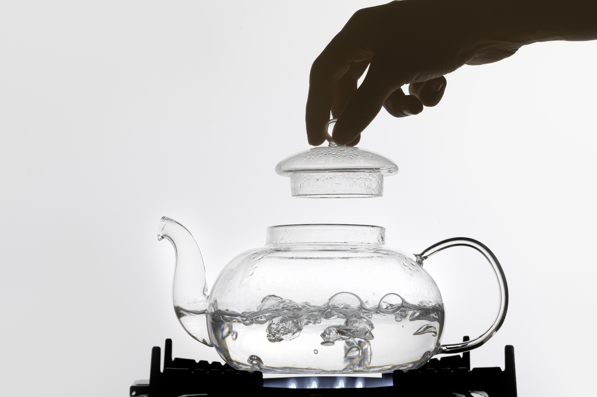

TIPS POLA MAKAN UNTUK PENDERITA CKD
Ada banyak cara untuk menjaga kesehatan ginjal. Salah satunya adalah dengan menjaga pola
makan sehat, seperti mengonsumsi sayuran rendah kalium dapat menyeimbangkan mineral pada
tubuh. Mengonsumsi minuman seperti teh jahe, rebusan kunyit, jus lemon pun bisa melawan
infeksi pada ginjal.
Nah, agar makanan yang dikonsumsi cocok dan sehat bagi penderita ginjal, kamu pun perlu lebih
teliti lagi saat memasak. Berikut ini beberapa tips dan trik memasak yang mudah untuk
penderita Gagal Ginjal Kronis
1. Kurangi pemakaian garam.
foto : freepik.com
Sulit masak tanpa garam, tapi ini sangat penting bagi penderita penyakit ginjal. Garam adalah
sumber utama natrium dalam makanan. Nah, kebanyakan pasien ginjal memiliki tekanan darah
tinggi. Mereka juga mengalami volume urine yang rendah. Natrium ekstra dalam tubuh justru
akan meningkatkan tekanan darah.
Akan tetapi, penderita ginjal tetap dapat mengonsumsi 1 sendok teh garam dalam sehari.
Bagilah menjadi 3 bagian, untuk sarapan atau snack, satu untuk makan siang, dan satu lagi
untuk makan malam.
2. Kontrol penggunaan gula.
foto : freepik.com
Banyak pasien ginjal juga menderita diabetes. Oleh karena itu, kamu harus tetap mengawasi
penggunaan gula saat memasak. Mereka boleh mengonsumsi 1 sampai 2 sendok teh gula dalam
sehari. Jika tidak demikian, kamu dapat memberi mereka pemanis alami dari buah. Contohnya
buah pisang, apel, jambu biji, pepaya, jeruk, nanas, anggur, dan lainnya.
3. Cuci semua bahan masakan.
foto : freepik.com
Ginjal yang kurang sehat, tidak bisa bekerja dengan optimal. Salah satunya adalah susah untuk
menangkal serta memproses racun yang masuk ke tubuh melalui makanan. Oleh sebab itu, kamu
harus lebih berhati-hati ketika menyiapkan makanan untuk penderita sakit ginjal.
Bersihkan bahan makanan dengan cermat. Biji-bijian seperti oat, beras, sayuran mentah, serta
buah-buahan perlu direndam dan dicuci 3-4 kali dengan air sebelum dimasak.
4. Potong ukuran kecil dan rebus berulang kali.

foto : freepik.com
Teknik ini akan membantu menghilangkan sebagian besar potasium dari sayuran. Setelah dicuci,
kupas sayuran, dan potong kecil-kecil. Sekali lagi cuci dengan air 2-3 kali. Rebus dengan
air hingga mendidih. Buang sisa airnya lalu tambahkan air segar dan didihkan lagi. Buang
sisa airnya lagi lalu tiriskan dan ambil sayurnya untuk dimasak.
5. Campur bahan biji-bijian dengan sayur.
foto : freepik.com
Pasien ginjal mengalami restriksi protein sampai tingkat tertentu. Oleh karena itu, kamu
dapat menyiapkan menu makanan menggunakan bahan dasar biji-bijian. Tapi karena sebagian
besar pasien ginjal juga penderita diabetes, untuk menyeimbangkan beban glikemik jangan lupa
untuk menambahkan sayuran yang telah diolah ke dalam hidangan.
6. Tidak menggunakan makanan olahan.
foto : freepik.com
Makanan kemasan mengandung natrium serta jumlah gula yang sangat tinggi. Oleh karena itu
hindari penggunaan jenis makanan ini. Contohnya saus instan, saus salad, mie instan, pasta
instan, popcorn instan, jus buah kemasan, acar, biskuit, cookies, dan lain sebagainya.
7. Pilih buah dan sayuran segar.
foto : freepik.com
Buah-buahan dan sayuran segar adalah pilihan terbaik untuk pasien ginjal. Hindari membeli
sayuran kaleng karena biasanya sudah dicelupkan ke dalam larutan garam saat proses
pembuatan. Nah, kamu dapat menggunakan sayuran beku untuk memasak. Namun, pastikan sayuran
beku tersebut tidak mengandung bahan pengawet.
8. Bumbui masakan dengan rempah.
foto : freepik.com
Jika tidak bisa memakai garam saat memasak, kamu dapat memberi bumbu pakai rempah
tradisional. Misalnya dengan bawang merah, jahe, bawang putih, kayu manis, lada hitam, dan
rempah-rempah lainnya.
Sumber : https://www.briliofood.net